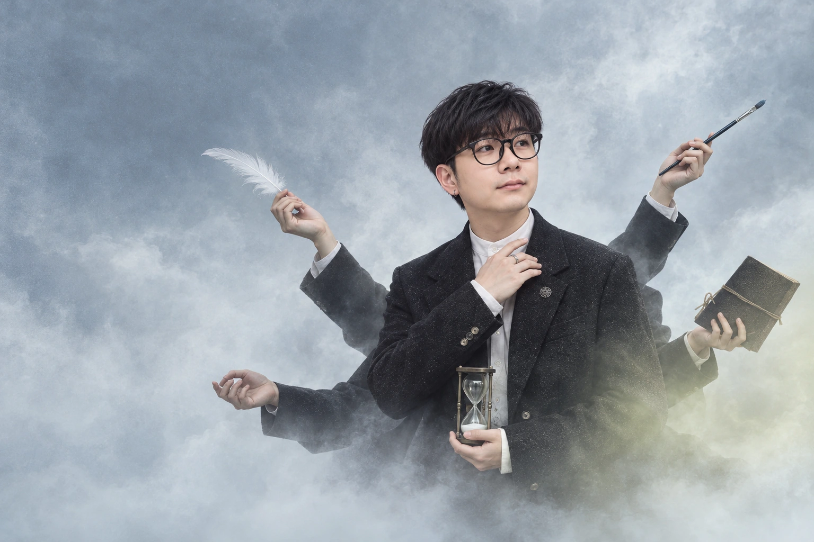
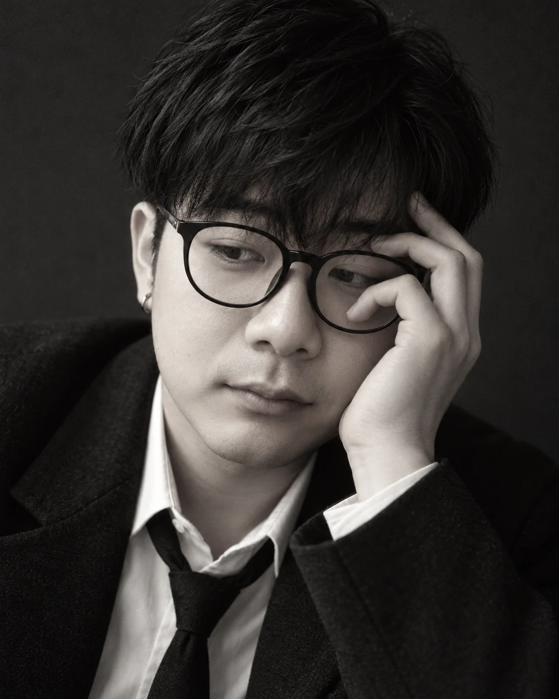
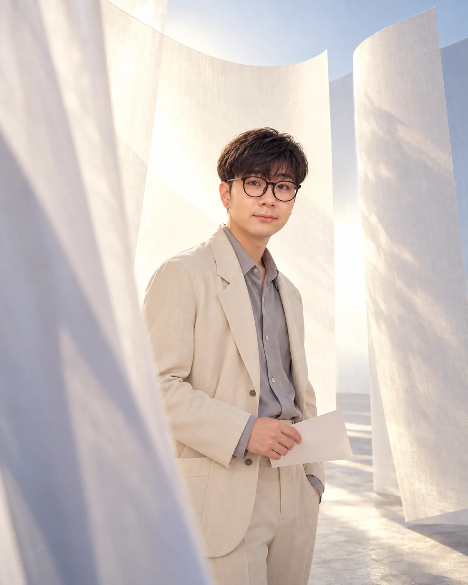
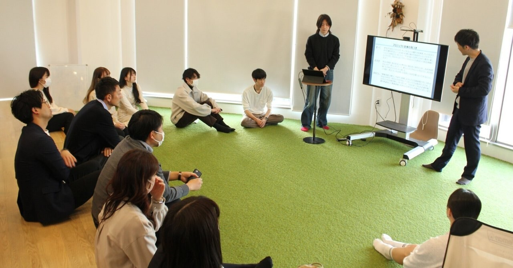
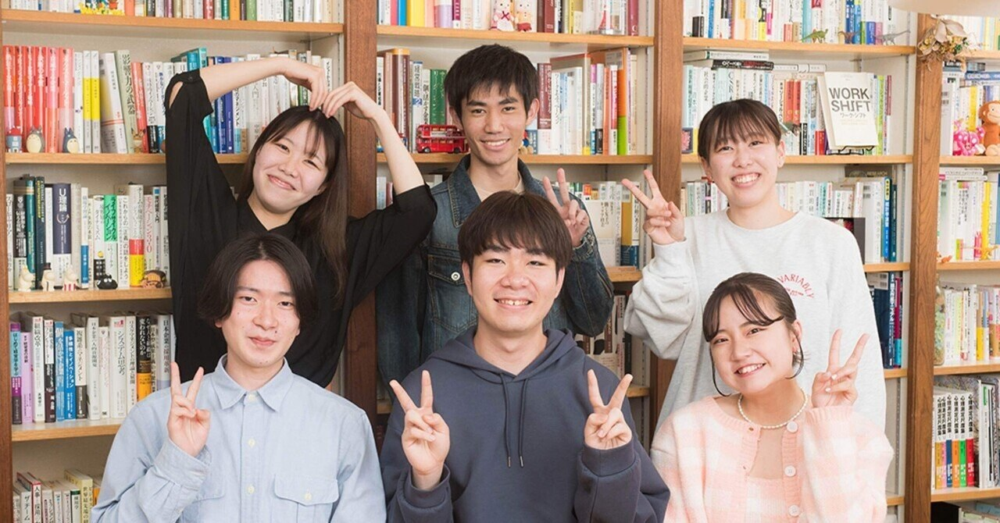
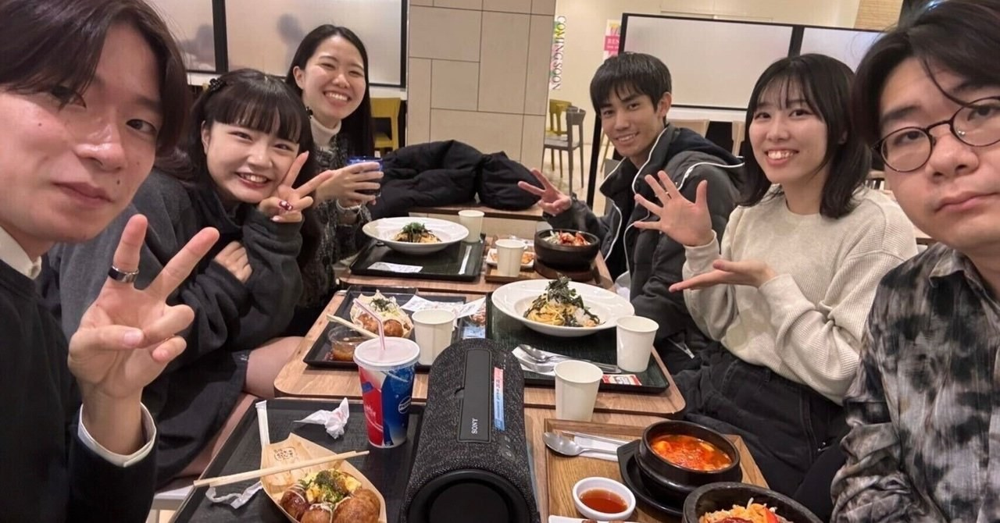

静岡・地域生産性向上プロジェクトで発表会を行いました
事業承継を考える学生と、経営者の座談会など。オープンラボから生まれた活動例。
noteで読む ↗
AZUMI
AIによるアートポートレート
安住 龍祐
プロフィールと、仕事のこと。静岡県焼津市出身、23歳。
静岡県立大学 経営情報学部卒。
専門は経営組織論。
ノジマでコンサルティングセールス・顧客案件管理を担当。現在は株式会社DYMキャリアでCCNA研修のPLとして、研修計画・進捗管理、講師育成、教材・学習システムの開発・運用を担当しています。2026年10月からは社内DXも並行し、現場へのヒアリング、契約関連業務の要件整理、自動化の試作を進めています。また、FDEへの挑戦も進めています。
通常10件以上の顧客案件を並行管理。納期確認、メーカー・協力会社との調整、配送・設置の手配を担当。
講師11名を育成、受講者13名の研修を管理。
全16章の教材・演習を制作し、学習システムを開発・運用。
社内DX（進行中）
契約関連業務・稟議書作成の自動化、新人営業向け教育AI Botに取り組んでいます。
言い切る。有言実行する。笑わせる。
静岡県焼津市出身、23歳。
営業を経て、いまはIT研修と
AIを使った業務改善に取り組んでいます。
はじめまして

言い切る。有言実行する。笑わせる。
これは、自分のモットーです。
静岡県焼津市出身、23歳。静岡県立大学を卒業し、営業を経て、いまはIT研修とAIを使った業務改善に取り組んでいます。
このページでは、仕事のことだけでなく、大学でやってきたこと、音楽、好きなことも紹介します。
仕事のこと
相手の話を聞いて、必要なことを整理する。
つくって終わりではなく、使うところまで。
提案すること。育てること。
必要な仕組みを、つくること。
さわやかで2年間アルバイトをした後、おたからやで査定士のインターンを経験しました。ロレックス、ルイ・ヴィトン、CHANELなどのブランド品や、金・プラチナの査定・買取に携わりました。
2025年4月から2026年3月までは、株式会社ノジマでコンサルティングセールスを担当しました。お客様の話を聞いて商品を提案するところから、注文、納期確認、配送・設置の手配まで。メーカーや協力会社との調整、購入後の修理相談にも携わっていました。
2026年5月から6月には、茶葉生産農家でアルバイト。茶園の除草や遮光シートの管理、収穫補助・運搬を経験しています。
2026年7月にDYMキャリアへ入社。8月からはCCNA研修のPLとして、研修計画・進捗管理、講師育成、教材づくり、学習システムの開発・運用に取り組んでいます。
教材だけでなく、学習管理、模試の採点、コマンド演習など、研修で使う仕組みもつくっています。つくって終わりではなく、実際に使いながら、不具合への対応や運用まで。
2026年10月からは、社内DXも並行しています。現場へのヒアリング、契約関連業務の要件整理、試作による仕様確認などを進めています。
仕事の軸
自分の言葉で挙げるなら、
この5つです。
まず、自分に変えられることを考える。
何のためにやるのかを見失わない。
考えるだけで止まらず、まず動く。
今できる範囲だけで目標を決めない。
できる方法を、考え続ける。
大学でのこと
経営組織論を専門に学び、
ゼミ長として活動しました。

地域の社会人がそれぞれの課題を持ち寄り、みんなで解決を考える「地域に開かれた研究室」。フューチャーセンターを前身とする、この場を企画・運営しました。
NPO、銀行、インフラ、市役所、保険、カーディーラー、建築など。年代も性別も業界も、多種多様な人たちが集まります。
ここから生まれた活動の一例は、2代目経営者になる予定の学生と、実際に事業を継いだ社長の相談会。

事業承継を考える学生と、経営者の座談会など。オープンラボから生まれた活動例。
noteで読む ↗記事・表紙：国保ゼミ KOKULABO / note
本人による発表会の案内を読む個人プロジェクトでは、介護業界の新卒採用をテーマに取り組みました。
静岡県内の大学生16名にインタビューを行い、その内容をもとに、新卒採用に向けた営業戦略を提案しました。

大学生16名へのインタビューをもとに、介護業界の新卒採用向け営業戦略を提案。
noteで読む ↗記事・表紙：国保ゼミ KOKULABO / note
卒業研究では、上司からのポジティブ・ネガティブなフィードバックが、部下の仕事への当事者意識に与える影響を研究しました。
着目したのは、上司への信頼。フィードバックと、部下の当事者意識との関係を考えました。

上司のフィードバック・信頼と、部下の仕事への当事者意識。その関係を研究。
noteで読む ↗記事・表紙：国保ゼミ KOKULABO / note
音楽のこと
声を重ねるアカペラ。
歌う側にも、リズムをつくる側にも。
大学では、アカペラサークル「The Vivaledge」に所属。ボーカルとボイスパーカッションを担当していました。
大学2年の文化祭ではリーダーとして、100人以上の部員を率いました。
仕事の外
歌、散歩、筋トレ、ドライブ。
映画やディズニーも好きです。
前職では研修初日に次長をウインクで射止め、仲良くなった実績があります。
「連絡が途絶えると相手を切り替えるところが、あまりにもメンヘラだから」
本人のジョークです。
チャッピーから見た安住
日々の会話をもとに、ChatGPTが紹介すると。
安住さんは、真剣に考えることと、人を楽しませることを両方大切にする人です。「言い切る・有言実行する・笑わせる」が本人のモットー。期待には結果で応えたいけれど、一緒にいる時間まで堅苦しくしたいわけではありません。
つづきの紹介
人と話すときも、一般論より「あなた自身はどう思う？」に関心が向く人です。自分にも考えがあり、相手にもその人の言葉で話してほしい。だから、会話を重ねるほど面白さが見えてきます。
行動力がある一方、勢いだけで決めるわけでもありません。日常の小さな選択でも、自分に合うか、何を大切にしたいかを納得するまで考える。学ぶことも、仕事の成果だけでなく、日々をもっと楽しむことにつながっています。
私には、高い目標を追う真面目さと、ふざけて笑い合える遊び心を、どちらも持っている人に見えます。
ChatGPTとの会話に基づく、主観的な紹介です。
これから、よろしくお願いします。
最初に戻る仕事の記録
安住 龍祐 2026年10月27日現在
＋で拡大できます。拡大後は書類を左右にスクロールしてお読みください。
スキルシート（全2ページ）
スキルシート
2026年10月27日現在
氏名 安住 龍祐
職務要約
株式会社ノジマで提案営業・顧客案件管理を担当し、納期確認、メーカー・協力会社との調整、配送・
設置の手配を行いました。現在は株式会社DYMキャリアでCCNA研修のPLを務め、研修計画・進捗管
理、講師育成、教材・学習システムの開発・運用を担当しています。2026年10月からは社内DXも並行
し、現場へのヒアリング、契約関連業務の要件整理、試作による仕様確認などを進めています。
職務経歴
株式会社DYMキャリア 2026年7月～現在
期間 業務内容
2026年10月～ 社内DX・業務自動化
現在 ・契約関連4パターンについて、CSV入力・既存ひな型による文面生成、
添付資料更新、メール下書き作成の要件整理・自動化を推進中
・稟議書作成の自動化に取り組み中
・新人営業向け教育AI Botを開発中
2026年8月～ CCNA研修プロジェクト／プロジェクトリーダー・講師・開発
現在 担当規模：講師11名、受講者13名
・研修運営、進捗管理、講師育成、全16章の教材・演習の制作・レビュー
・評価・指導・記録・共有・引継ぎ手順の標準化
・学習管理・模試採点・コマンド演習・教材サイトの要件整理、開発・導入
・生成AIを活用した開発、利用者への確認、不具合対応、保守・復旧手順の整備
【実績・取り組み】
・講師全体の授業準備時間を週約40時間から約1時間へ削減（97.5％減、実測）
・受講者の採点・集計と、上長から管理層への報告書作成を自動化。報告書作成
を約30分から約1分へ短縮
・自社プロパー社員がシステムを利用し、1週間でCCNAに合格。
分野別の平均正答率90％超。
研修にとどまらず、社内全体で利用される学習システムへ展開。
・別途開発したLPIC-1向け学習システムを活用し、自身を含む8名全員が
ゼロから学習、1週間以内に合格
・CCNA・LPIC-1の学習で、Ping-tから内製環境へ完全移行し、
外部学習サービスの経費削減に貢献
・開発・運用を社内PJ化。クラウド・セキュリティ・テスト等、
開発・インフラ両面で要件定義から運用保守までの経験を積める機会を整備
茶葉生産農家（アルバイト） 2026年5月～2026年6月
期間 業務内容
2026年5月～ ・茶園の除草・遮光シート管理、収穫補助・運搬
2026年6月
1/2
株式会社ノジマ 2025年4月～2026年3月
期間 業務内容
2025年4月～ 店舗スタッフ／コンサルティングセールス・顧客案件管理
2026年3月 ・通常10件以上の顧客案件を並行管理（数日～1か月超、最長3か月）
・注文品・修理の納期を日次確認。メーカー・協力会社への進捗確認と顧客連絡
・修理続行等の確認、連絡日時・相手の記録、担当者間の案件引継ぎ
・大型家電の配送・設置・工事の受付・手配、納期調整、関係業者との連携
・家電・デジタル製品全般の接客販売、ニーズのヒアリング、
商品比較・課題解決型提案、用途・予算に応じた見積・購入手続き
・理美容品担当として商品知識を生かした販売促進、関連商品提案、売場管理
・スマートフォン・通信料金プラン・インターネット回線の比較提案・サービス案内
・新規会員獲得、長期保証・ゲーム機保証等の付帯サービス提案
・POSレジ操作・決済処理、注文・販売伝票管理、返品・交換対応
・在庫管理、発注・取り寄せ・入荷検品、品出し・棚卸し
・修理受付、故障相談・原因確認、保証確認、解決提案・アフターサポート
・商品陳列、売場レイアウト変更、販促物設置、キャンペーン対応
・販売実績分析、接客・売場改善、店舗運営
【実績・取り組み】
・新規アプリ会員獲得で店舗・エリア（静岡3エリア、神奈川西エリア）1位
・ゲーム機保証加入率で店舗1位
・大型家電の保証加入比率を10％から30％へ改善（個人実績）
活かせる経験・知識・技術
進行管理：顧客案件管理1年、研修PL約3か月
要件管理：研修・社内DXの要件整理、仕様確認（約3か月）
AI活用：ChatGPT、Claude Code
開発：JavaScript、HTML/CSS、Python、Node.js（生成AIを活用）
自動化：Google Apps Script
Google Workspace：Sheets、Forms、Drive、Slides、Docs
Git（初歩）
クラウド：Google Cloud、Cloud Firestore（各初歩）
・Google Apps Scriptとの関連付け、APIの有効化・認可、
Firestore連携検証（生成AIを活用）
API連携：REST API、OAuth 2.0（生成AIを活用）
資格・免許・試験合格
2020年10月 実用英語技能検定2級
2021年3月 普通自動車第一種運転免許
2026年7月 CCNA
2026年8月 LPIC-1
2026年8月 LPIC-3 Security（303試験）合格
2/2